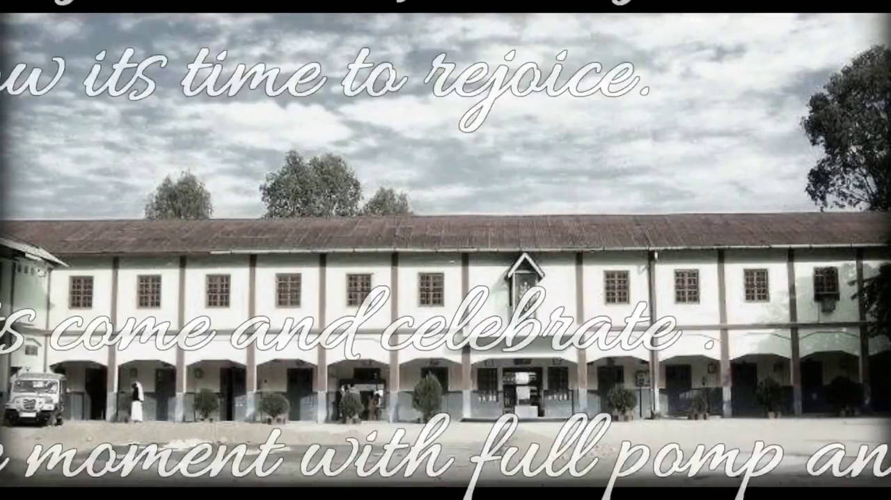

A SHORT HISTORICAL SKETCH

The sisters belong to a society known as the MISSIONARY SISTERS OF MARY HELP OF CHRISTIANS (MSMHC). It was founded by the late Mgr.
Stephen Ferrando, SDB, on 24th October 1942, at the world war II broke out. Seeing the misery, lack of educational facilities, health and hygiene,
he sensed the need of founding a local congregation of women who would dedicate themselves to the service of the people.